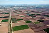

irrigation

Definition: Irrigation (also referred to as watering) is the practice of applying controlled amounts of water to land to help grow crops, landscape plants, and lawns. Irrigation has been a key aspect of agriculture for over 5,000 years and has been developed by many cultures around the world. Irrigation helps to grow crops, maintain landscapes, and revegetate disturbed soils in dry areas and during times of below-average rainfall. In addition to these uses, irrigation is also employed to protect crops from frost, suppress weed growth in grain fields, and prevent soil consolidation. It is also used to cool livestock, reduce dust, dispose of sewage, and support mining operations. Drainage, which involves the removal of surface and sub-surface water from a given location, is often studied in conjunction with irrigation.
Source: Wikipedia
Wikipedia Page (Something wrong with this association? Let us know.)
Wikidata Page (Something wrong with this association? Let us know.)
Occurs in: